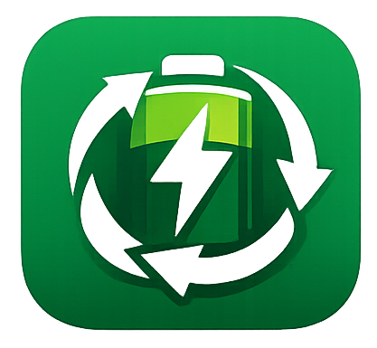

Aprenda sobre descarte correto de forma interativa, prática e acessível, diretamente no seu celular.

O aplicativo GreenCharge foi desenvolvido para complementar o site, oferecendo uma experiência mais interativa e acessível.
A proposta é utilizar uma abordagem dinâmica, como um sistema de perguntas ou desafios (quiz), para ajudar os usuários a aprenderem de forma prática sobre o descarte correto de pilhas e baterias.
* O download pode exigir permissão para instalar aplicativos de fontes externas.
Muitas pessoas têm dificuldade em manter o interesse em conteúdos educativos tradicionais. O aplicativo busca resolver isso através de uma abordagem mais envolvente, tornando o aprendizado mais leve e eficiente.
Além disso, ele permite que o usuário revise conceitos importantes de forma rápida, contribuindo para a fixação do conhecimento.
Caso queira informações técnicas sobre o desenvolvimento do app ou do site,
você pode acessar o diretório do projeto no GitHub através do link abaixo: